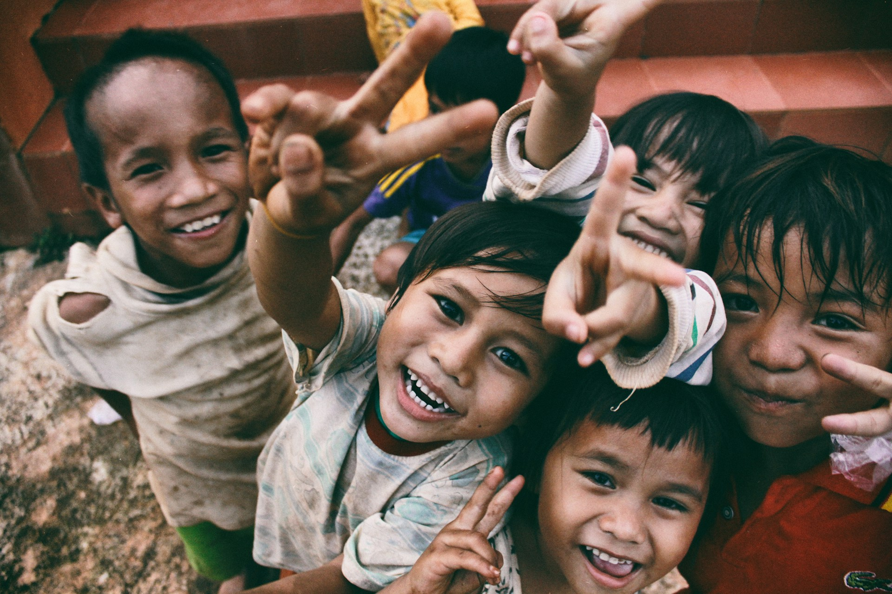

Supplies, meal routes, and local support prepared for classroom partners.
01 / Mission Focus
Support is clearer when each need has a visible path.

Education
Move classroom kits, meals, and field notes through a route supporters can understand.

Food access
Pack practical relief around delivery planning and volunteer availability.
02 / Programs
Campaigns stay grounded in field units, not vague promises.

Food route
Family meal pack route
Delivery list prepared for coordinator review.

Classroom kit
Learning supplies for primary students
Teacher request paired with packing volunteer options.
03 / Proof
Small evidence blocks make giving feel accountable.

05 / Volunteer
Help is easier to offer when shifts are specific.

06 / Field Notes
Stories should feel documentary, not decorative.
“When supporters can see what moved, trust becomes practical.”
Packing-team notes can document classroom kit progress before delivery.
07 / Questions
Clear answers before people commit time or money.
How are needs selected?
Needs are listed when a local partner has described the next useful step and the field route can be presented clearly.
Does this process donations?
No. This is a static front page demo with honest form interactions only.
Can volunteers help without donating?
Yes. Volunteer routes are presented as practical shifts instead of financial asks.